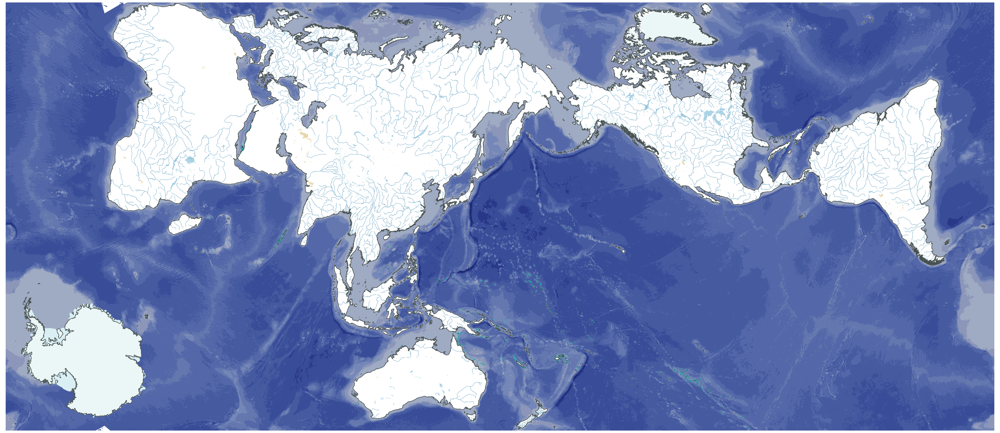
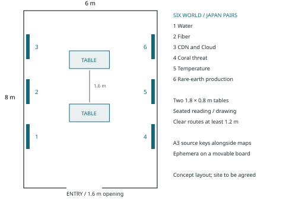
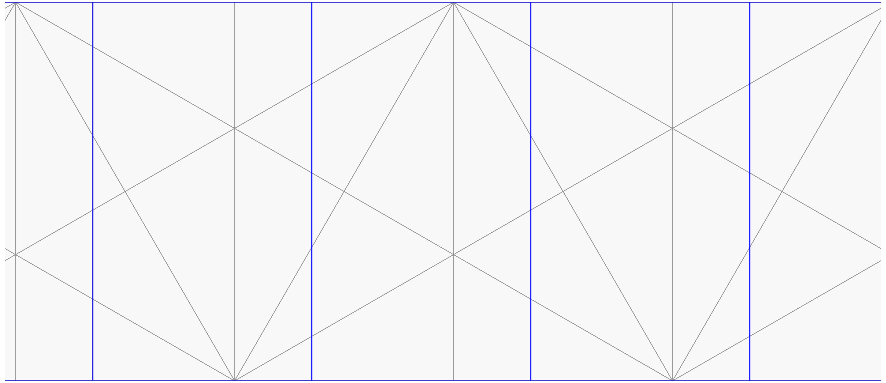
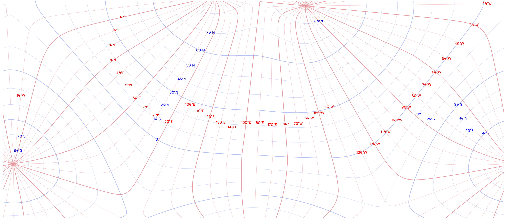
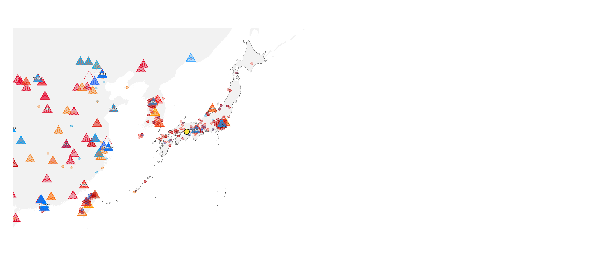
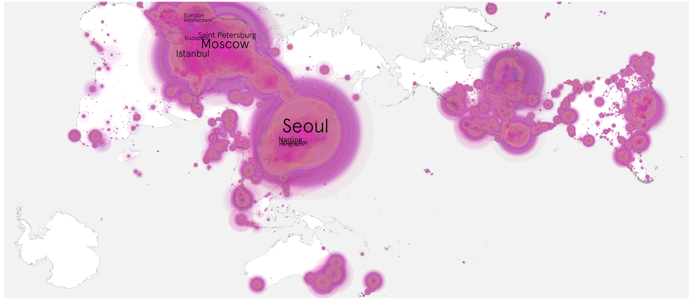
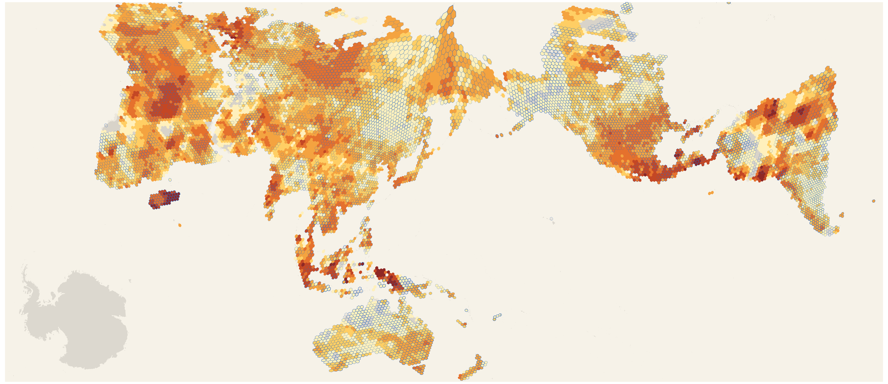
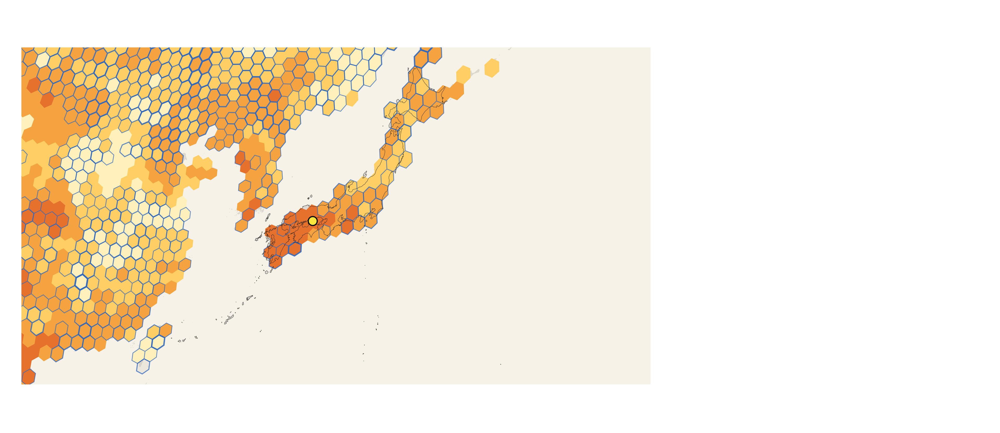

01 / 10
Cartofreako × Setouchi
A public atlas studio · Benjamin De Kosnik · Setouchi Triennale 2028
Concept
Cartofreako is a tool to approach the world and learn, design, and anticipate possible futures. For the 2028 Setouchi Triennale, it becomes an open studio where residents and visitors read maps, exchange knowledge and make new work in public. A Japan atlas and a world atlas connect the Seto Inland Sea with communications networks, media circulation, atmosphere, oceans, food, energy and minerals from around the world.
Large paired maps establish a shared reference. Around a table, participants trace water patterns, compare map projections, question digital infrastructure and propose subjects rooted in island life. Drawing and discussion produce an evolving display of annotated maps, paper experiments and questions. The project draws on R. Buckminster Fuller’s Dymaxion Map and World Game as prompts for collective inquiry.
Awashima is the preferred setting for autumn 2028. Its maritime history offers a starting point for conversations about routes and exchange. Local collaborators will help select questions and adapt the studio to an agreed indoor room. Other festival venues remain possible.


One installation, five ways to take part
Five events and workshops are proposed, with two detailed in this proposal: Hamonshu Revisited; Dymaxion and AuthaGraph; Ocean Changes and Climate; Video Common Market Revisited; and an open invitation to propose further sessions.
Proposed category: interaction and exchange. Indoor installation with workshops; preferred season: autumn, 29 September–12 November 2028. Requested production allowance: JPY 2,310,000.
Project page: https://benjamin.dekosnik.com/futures/setouchi-2028/
02 / 10
A room for maps and conversation
Installation · materials · dimensions · visitor experience
A room of approximately 6 × 8 m holds six world/Japan map pairs, two reading and making tables, and a movable display for work made during the Triennale. Visitors can enter for a brief look, read the sources while seated, or stay for a guided session.

Display: twelve pigment-printed wall maps, each 111.76 × 48.39 cm; readable Japanese/English source keys; two table reference sets; reusable supports; paper, pencils, tracing sheets and folding templates. Washi is a proposed material for selected editions, subject to print trials.
Reading sequence: choose a subject, compare its world and Japan views, consult the dated key, then add a question or make a paper response. The initial subjects are Water, Fiber, CDN and Cloud, Coral Threat, Temperature and Rare-earth Production. Other atlas subjects can rotate into the display.
Site: an accessible indoor room on Awashima, selected with the festival and a host. The tour report identifies former shops and school buildings as places visited; this drawing does not assign a particular property. Supports and circulation will be adjusted after measurement. [2]
03 / 10
Two atlases, 36 subjects
Japan and World · the same subject identifiers in both volumes
Each 75-page volume opens with a cover, edition notes and an index, followed by 36 maps and their separate legend/source sheets. The printed index retains the archive’s subject numbers. Subjects 05 and 06 are outside this selection.
01 Cartography Geometry
02 Cartographic Graticules
03 Earth
04 Water
07 Atmosphere
08 Network CDN and Cloud
09 Network Fiber
10 Network Starlink Groundstations
11 Network swarm / Dan Da Dan / 1080p / 4K
12 Network swarm / Dan Da Dan / 720p / SD
13 Particulate 2025
14 Particulate 2026
15 Temperature 2025
16 Temperature 2026
17 Astronomy: all sky
18 Astronomy: ground observer
19 Astronomy: Hubble observer
20 Orbital Technosphere: global
21 Orbital Technosphere: observer
22 Installed solar generating capacity
23 Installed wind generating capacity
24 Operating nuclear net electrical capacity
25 Petroleum refinery throughput
26 Food production index
27 Total fisheries production
28 Coral reef integrated local threat
29 Forest area
30 Rare-earth mine production
31 Population under age 30
32 Population age 60 and older
33 Completed ISCED 3 or higher, age 25+
34 Completed ISCED 6 or higher, age 25+
35 Resident patent applications
36 Petroleum and other liquid fuels / 2025
37 OPEC total liquids / 2030 projection
38 World Oil Outlook / country coverage
Read the evidence at its own scale
The atlas is a dated study edition. A Japan detail can contain nearby countries; national statistics do not measure an individual island. Celestial subjects use an observer/context view. Each legend preserves source dates, units and methods. The world framing places Antarctica at the lower left as an editorial choice.
04 / 10
Hamonshu Revisited
Workshop 1 · water, pattern and print · proposed 90-minute session
Begin with the wave and ripple designs in Mori Yūzan’s 1903 Hamonshū, as proposed in the artist’s project description. Participants discuss how a line can describe movement, then group and redraw patterns. They apply their own derived patterns to transparent overlays over the Water plate’s colour fields.
Format: up to 16 participants; a short introduction, small-group pattern classification, a drawing/printing exercise and a shared viewing. Use tracing sheets, pencils, water-based print materials and study maps. Provide a seated and no-cut version.
Result: a small collection of participant-made pattern sheets beside the maps. The overlays are artistic responses, separately labelled from measured geography. Participants choose whether to display their work or take it home.
05 / 10
Dymaxion and AuthaGraph
Workshop 2 · projection, collective design and AI-assisted cartography


Compare ways of unfolding a world and choosing what sits near the centre or edge. The session connects Fuller’s Dymaxion Map and World Game with the AuthaGraph formulation and the practical choices of the Cartofreako atlas. Participants trace a route, fold a study map and explain what each representation makes easy or difficult to see.
A proposed conversation with Hajime Narukawa
Invite Narukawa to discuss AuthaGraph, cartographic design and the role of AI-assisted tools. His participation and the session format remain to be agreed. The artist can lead the paper exercise independently; remote guest participation is included in the planning model.
A resource exercise

Choose a material used by a familiar device. Compare the resource map with the paths and institutions needed to make, circulate and repair that device. Small groups sketch a possible future and list what additional evidence they would need to evaluate it.
Proposed 90 minutes, up to 16 participants. Large study sheets, folding templates and written prompts support discussion in Japanese and English.
06 / 10
Video Common Market Revisited
Workshop 3 · media circulation and its physical infrastructure

Begin with a proposed conversation between Lisa Nakamura and Abigail De Kosnik about contemporary media circulation. Read the cable, cloud/CDN, Starlink groundstation and orbital maps alongside the distribution of Japan-origin media. Ask how a familiar screen experience depends on distant materials, institutions and places.


Format: a 90-minute public conversation and map-reading workshop, approximately 20 seated participants. A local respondent and the audience bring examples of viewing and sharing. The speakers are proposed invitees; remote participation is the budget assumption.
Interpretation: CDN marks do not count unique active facilities or measure traffic. Swarm circles represent cumulative downloader observations, not unique viewers; the 720p/SD partition is a separate atlas subject. Keep these distinctions on the table while discussing culture and distribution.
07 / 10
Ocean Changes and Climate
Workshop 4 · what a map tells us, and what it leaves open

Invite an ocean or climate specialist and a local respondent to begin from a question chosen with the host: a change noticed, a resource used, or a future worth investigating. The atlas supplies comparisons rather than a ready-made account of island conditions. The scientific contributors are to be selected with the host.


Format: 90 minutes, up to 16 participants. Read a source key together, compare the two scales, write questions that the maps cannot answer, then propose observations or collaborations that could extend the discussion.
Careful comparisons: the reef layer is a historical threat assessment, not current coral cover; symbol area is not reef area. The temperature maps describe land, not sea temperature. Differences between the displayed years are not a direct estimate of warming. Fresh local knowledge and future source updates will be dated and credited separately.
08 / 10
Working in public
Open invitation · collaborators · production and installation schedule
A fifth strand: an open studio
Residents, visitors and other interested parties can propose a topic, bring a question or help make a session. The host and artist choose feasible additions to the programme. A bilingual facilitator supports conversation and written participation. Contributors choose their credit and whether a drawing is displayed, returned or reproduced; public documentation uses separately agreed selections.
Proposed technical consultations
The supplied project description names Tomiyoshi Tsukada in Nagano for print production, Hajime Narukawa / AuthaGraph for cartography, and Awagami for washi. These are proposed consultations, with availability, roles and fees to be agreed. Local collaborators help determine the questions, language and daily welcome.
| Period | Production and care |
|---|---|
| 2027: after selection | Agree a host and room; measure access and walls; confirm contributors, quotations, rights and responsibilities. |
| Jan–Jun 2028 | Co-design local prompts; test papers, scale, colour and mounting; prepare Japanese/English text and workshop templates. |
| Aug–Sep 2028 | Refresh selected data 6–8 weeks before opening; check sources and captions; make final prints, spares and care instructions. |
| 24–28 Sep 2028 | Proposed installation window: install supports and prints, check circulation and seating, rehearse with the local host. |
| 29 Sep–12 Nov 2028 | Autumn display. Plan 21 artist nights across installation and workshop blocks; schedule the four sessions and open studio with the host. Local care continues between visits. |
| 13–15 Nov 2028 | Remove supports, restore the room, return materials and agree the final participant-work selection and documentation. |
The installation is designed to remain legible and usable throughout the autumn session. Daily checks cover print condition, supports, table supplies and clear routes. Keep spare labels and prints on site; agree any closure or repair with the host.
09 / 10
Production budget
One integrated proposal · inclusive planning allowances in Japanese yen
| Item | JPY |
|---|---|
| Artist: development, preparation and facilitation | 250,000 |
| Local co-facilitation and host support | 180,000 |
| Japanese translation and event interpretation | 200,000 |
| Technical consultations and guest honoraria | 160,000 |
| Paper, colour and legibility proofs | 80,000 |
| Twelve wall maps, source labels and spare prints | 200,000 |
| Reusable supports and reversible mounting | 150,000 |
| Table hire, study atlases and workshop materials | 80,000 |
| Artist international return travel | 220,000 |
| Japan transport, freight and packing | 140,000 |
| Artist accommodation: 21 nights × JPY 10,000 | 210,000 |
| Venue and utilities allowance | 100,000 |
| Small AV rental and remote guest connections | 60,000 |
| Exhibition care, removal and return | 70,000 |
| Subtotal | 2,100,000 |
| Contingency (10%) | 210,000 |
| Total requested | 2,310,000 |
This estimate covers the installation, four named workshops and the open-studio strand. It includes travel, accommodation, exhibition care and removal. The artist plans 21 nights on site; international guests participate remotely unless a revised budget supports travel.
The proposed funding source is the festival production subsidy, subject to selection and the agreed estimate. No sales or ticket income is assumed. Amounts include tax allowances where applicable and must be replaced by quotations after the room, paper and programme are agreed.
If quotations exceed the allowance, reduce the number of full-size display pairs or use standard paper for most editions while retaining both table atlases, readable source keys, interpretation and the core workshops. Record the revised scope with the host before production.
10 / 10
Artist and references
Benjamin De Kosnik · selected CV from the supplied 1 November 2026 document
Selected CV
Education: MFA, Studio Art, California College of the Arts (2016); BA, Mathematics, University of Texas at Austin (1995). Selected exhibitions: Another Light Show, with Kristen Wong, 500 Capp Street, San Francisco (2026); Transmarcations: X is not for destination …, Beursschouwburg, Brussels (2017); CCA MFA Exhibition (2016); Bay Area Digitalists, Root Division (2015); Hong Kong Open Printshop Graphic Arts Fiesta (2014); Tokyo Screen Print Biennial (2011, 2013).
Selected talks: Piracy is the Past, Present, and Future of Streaming, HOPE_16, with Abigail De Kosnik (2025); War, Weapons, and the Web: Tracing Cyberwar Leaks and 3D-Printed Firearms as Distributed Network Swarms, Association of Internet Researchers, Rio, with Abigail De Kosnik and Aaron Zolla (2025); Digital Expansionism and Counter-Expansionism as Cyberwarfare: Analyzing Leaks in the Russo-Ukrainian War, International Communications Association Post Conference, Sydney, with Abigail De Kosnik (2024); UKR-RUS Leak Analysis, HOT FOCI, USENIX (2022); Peer Phenomena as Nam June Paik’s Video Common Market, Decentralized Web Summit (2018); Alpha-60 Bittorrent Cartography, Venice Research Pavilion, with Abigail De Kosnik (2017); Writing Art in Digital Space, International Conference on Artistic Research, The Hague (2016); The Machine is Learning Aesthetics, Digital Craftsmanship Workshop, Designing Interactive Systems Conference, ACM SIGCHI, Brisbane (2016).
Public Collections: Freehome, Berlin, Germany; Hong Kong Open Printshop, Hong Kong; New Holland Island, St. Petersburg, Russia; Garage Archive Collection, Moscow, Russia; HDK, Gothenburg, Sweden; Printed Matter, NY, NY.
Selected distinction: Special Jury Prize, Tokyo Screen Print Biennial (2011). Related experience: Data Discovery Program, University of California Berkeley (2025).
Contact: studio.dekosnik@gmail.com · benjamin.dekosnik.com
References and visual sources
[1] Setouchi Triennale 2028, official call and applicant guidelines, checked 1 November 2026. setouchi-artfest.jp/en/proposals.
[2] Setouchi Triennale 2028, Report on the On-site Tours, September–October 2026. Awashima’s maritime history and candidate building types inform this proposed setting. Official tour report.
[3] Benjamin De Kosnik, supplied project description and two-page art CV, 1 November 2026; Cartofreako public-work memo, 21 October 2026. The selected CV above is an excerpt. The full supplied CV remains in the local source package.
[4] Cartofreako, Japan and World atlases, ST2 map edition, 31 October 2026; front matter revised 1 November 2026. Figures in this proposal reproduce those maps. The adjoining atlas legend sheets carry provider URLs, snapshots, units and methods. Core sources shown here: AuthaGraph/Narukawa; Natural Earth; USGS; TeleGeography; ITU; cloud_cdn_cache.bkoz; Alpha60; WRI; NOAA CPC.
Current atlas files and project material: https://benjamin.dekosnik.com/futures/setouchi-2028/. The application is self-contained; the two full-size atlas volumes are supplementary reading.